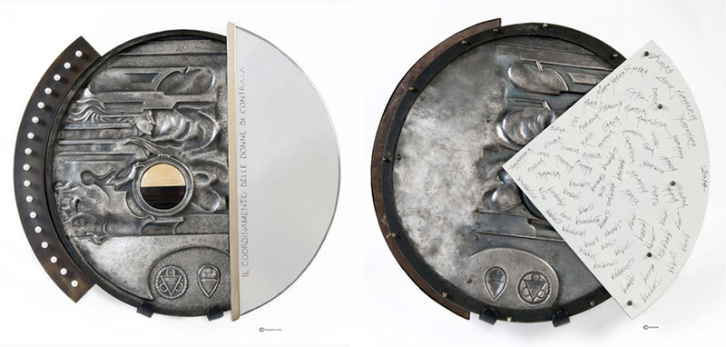

Presentazione del Masgalano offerto dal Coordinamento delle Donne di Contrada
Per la seconda volta dal 1995 il Coordimamento delle Donne di Contrada offre il Masgalano.
Il coordinamento, variegato nelle regole con le quali ogni Contrada sceglie la propria rappresentante, ha poi un’identità ben precisa per il suo ruolo. Come per tutte le realtà aggregative nelle quali le 17 consorelle si ritrovano unite, le rivalità presenti per il Palio si acquietano nei momenti di vita comunitaria, così come quando la città o una parte di essa ha bisogno di solidarietà e di sostegno.
In questa occasione le donne hanno voluto far sì che il loro gesto esprimesse il loro attaccamento e il loro apprezzamento per l’impegno, il lavoro e i sentimenti che uniscono tutti coloro che portano la propria Contrada ad essere la “mas galante”.
Per il Masgalano del 2014 le donne del Coordinamento hanno scelto un percorso che le ha coinvolte e responsabilizzate anche individualmente nella scelta dell’artista, caduta su Laura Brocchi.
Non occorre una presentazione di Laura Brocchi, al suo quinto Masgalano; è conosciuta e apprezzata da tutti i senesi. Non posso comunque fare a meno di testimoniare ciò che mi ha colpito durante il colloquio che abbiamo avuto alcuni giorni fa.
Innanzi tutto la sua figura di donna esile, dolce nello sguardo e nel modo di esprimersi, e al tempo stesso forte nel costruire il rapporto con i materiali che usa, quali il ferro e l’acciaio e addirittura nello scegliere la tecnica di realizzazione dell’opera che, in questo caso, non è stata di fusione ma di sbalzo e di cesello in continuità con la tradizione della “bottega” Brocchi.
L’altro elemento che mi ha colpita è stata la capacità del suo pensiero di essere convincente e coinvolgente nel far comprendere ciò che ha voluto esprimere con la sua opera. E’ un oggetto artistico di gusto classico, rotondo, composto da più parti e da più materiali in un insieme di contrasti e di armonie che accompagnano la bellezza dell’insieme.
La classicità delle forme, i richiami, con immagini suggestive, alle donne senesi e alle loro storie del passato non impediscono alla giovane artista di proiettarsi nella sua contemporaneità e di rivolgersi alle donne senesi di oggi, dando loro un messaggio perché traggano forza dal passato di altre donne e sappiano oggi essere ricche di femminilità e di tenacia, di dolcezza e di orgoglio, di determinazione intransigente e di passione.
Convivono le linee morbide di un manto femminile con le linee rette che rappresentano l’elemento maschile nella società, un rimarcare la differenza, ma senza contrapposizioni.
Dell’opera colpisce in modo particolare la Balzana messa al centro che spicca con il suo nero dell’ebano e il legno chiaro del bosso. Questo contrasto dei colori della Balzana, sia pure in maniera meno evidente, si ripete altre volte nell’abbinamento dei materiali.
Al centro, dunque, Siena accostata ad un volto di donna, ma sono le mani di quella donna che la sorreggono a sostenerla in questa centralità, dando insieme anche un senso di protezione.
Un’opera spinge sempre ad una lettura individuale e personalizzata: il manto e le mani della donna portano anche a ricordare l’amore e la protezione della Vergine sulla Città.
Anche nel richiamo alle donne senesi storia e contemporaneità si uniscono a formare un tutto unico. Questo avviene in particolare nella parte posteriore dove sono riportati i nomi di donne della storia senese (Margherita, Laudomia, Baldovina, Caterina, Savina…) di donne che nel tempo sono state dirigenti di Contrada (Priori e Capitani) e delle donne dell’attuale Coordinamento che ha offerto il Masgalano.
L’incisione del solo nome consente che tutte le donne che, oggi, portano quel nome possano sentirsi anch’esse protagoniste di un progetto orientato al bene comune delle Contrade e della Città.
Due dei nomi storici delle donne senesi trovano riferimento anche sul davanti dell’opera, con lo sbalzo e il cesello di due fiori: un giglio e una margherita. Il giglio ricorda la figura di S. Caterina che, con la forza della fede e della spiritualità, seppe essere grande nei confronti di ogni espressione di potere. La margherita ricorda Margherita Bichi che, sensibile al valore della libertà senese, fu animatrice della resistenza morale e armata, trasmettendo al popolo fiducia nella vittoria che, il 25 luglio 1526, Siena conseguì a Camollia contro Firenze e l’alleato pontificio.
Spiritualità e valori civili e civici devono essere anche oggi ispiratori per le donne senesi.
L’ultimo richiamo all’opera voglio farlo ricordando la striscia in bronzo che contorna sul davanti la parte sinistra. In essa sono incastonate 17 perle. È immediato il riferimento alle Contrade: l’artista ha trovato il modo per dire, senza la retorica delle parole, che sono 17 gioielli della Città. Salvaguardiamole con l’impegno di tutti noi.
Come con il drappellone, il museo di una Contrada, grazie ai suoi uomini e alle sue donne di ogni età, si arricchirà con l’opera di un’artista senese, con un’opera oggi contemporanea, che diverrà anch’essa storica e antica.
Anna Carli
25 giugno 2014
Per visualizzare il masgalano 2014 ad altissima risoluzione, cliccate qui oppure sulla foto in cima a questa pagina.